Authors: John H. Caporaletti, J. P. Kestner
Type: theory · Category: quantum information and computing · PDF: https://arxiv.org/pdf/2607.15993v1
Analysis basis: full PDF text, analyzed in chunks
Topic relevance: Keldysh / 2PI / non-Gaussian methods 1/5 · analog quantum simulation 1/5 · correlated / nonlocal dissipation 1/5 · driven-dissipative phase transition 1/5 · methods for driven-dissipative 1/5 · spintronics-quantum-optics interface 1/5
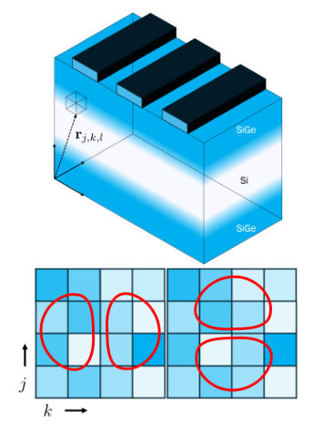
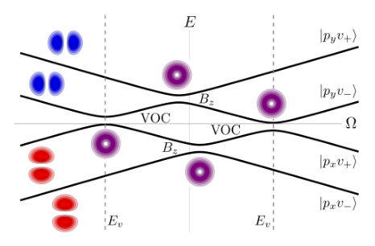
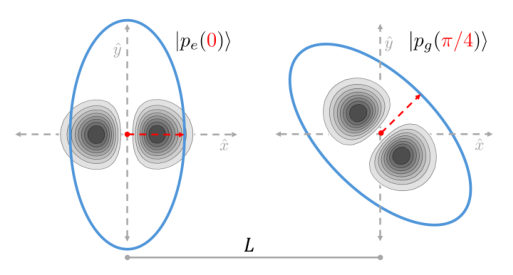
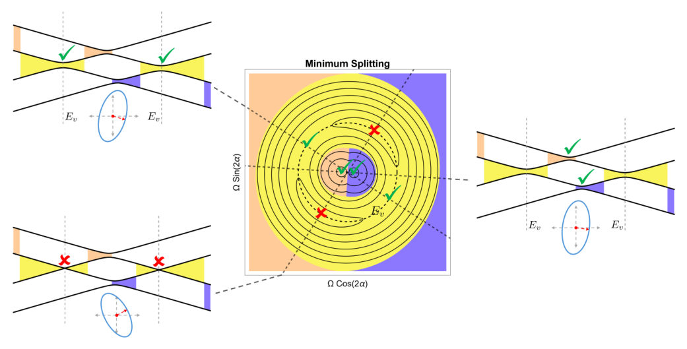
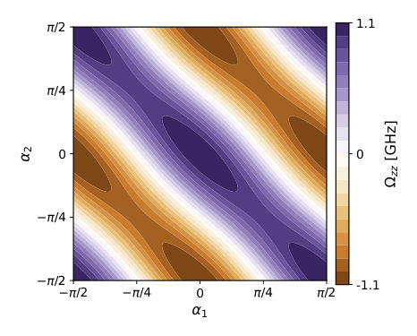
Summary. The paper introduces the pOv qubit, an encoding scheme leveraging valley-orbit coupling in semiconductor quantum dots. It demonstrates that this system offers enhanced coherence by operating at noise-immune 'sweet spots' and provides a novel pathway for implementing tunable two-qubit gates using the quadrupole-quadrupole interaction.
Why it may be interesting. This work directly addresses key challenges in solid-state quantum computing: achieving long coherence times ($T_2^*$) through engineered Hamiltonian symmetries (sweet spots) and enabling scalable, controllable interactions between qubits via electric field tuning.
Main problem. The goal is to develop a robust qubit encoding in semiconductor quantum dots that maintains fast electrical control while suppressing decoherence from charge noise.
Main result. A novel pOv qubit utilizing valley-orbit coupling (VOC) was proposed, which exhibits tunable two-qubit gates mediated by the quadrupole-quadrupole interaction. This system achieves coherence times up to $10 \mu ext{s}$ at specific 'sweet spots'.
Method. The analysis involves deriving effective Hamiltonians for the pOv qubit and calculating noise susceptibility using a phenomenological Two-Level Fluctuator (TLF) dipole noise model.
Model / system. The system is based on electrons confined in SiGe/Si/SiGe quantum dots, utilizing the coupling between orbital ($ ext{p}_O$) and valley degrees of freedom. The Hamiltonian incorporates Valley-Orbit Coupling (VOC), leading to the pOv qubit subspace.
Key observables. Dephasing time ($T_2^*$), two-qubit gate interaction strength (tunable from zero to $\sim 1 ext{ GHz}$), and noise insensitivity at sweet spots.
Important parameters / regimes. Valley splitting energy ($E_v/h \sim 1-10 ext{ GHz}$); Noise strength ($\delta/E_v \sim 10^{-3}-10^{-4}$).
Assumptions / limitations. The analysis treats VOC as a perturbation and uses the quadrupole-quadrupole Coulomb interaction for two-qubit gates, neglecting kinetic exchange in some calculations.
Figures summary. Figures illustrate the SiGe/Si/SiGe heterostructure, how alloy disorder causes valley splittings, and schematic representations of avoided crossings (sweet spots) as a function of dot anisotropy.
Paper structure. The paper progresses from defining the pO qubit to proposing the more complex pOv qubit via VOC. It then analyzes coherence improvement at sweet spots using noise models and finally details the electrically tunable two-qubit gate mechanism.
We propose encoding a qubit in a two-level subspace spanned by the lowest $p$-orbital state in the excited valley of an anisotropic quantum dot and the excited $p$-orbital in the ground valley, which we dub the $pOv$ qubit. There is an avoided crossing between these states due to valley-orbit coupling (VOC) induced by alloy disorder, enabling complete single-qubit control using baseband electrical control of the dot anisotropy. We find that `sweet spots' exist at specific dot orientations where the instantaneous eigenstates are first-order insensitive to charge noise. Using a phenomenological two-level fluctuator (TLF) dipole noise model, we estimate an average dephasing time of $T_2^*\approx 10\,μ\text{s}$ and a quality factor of $Q\sim 10^4$. Alternatively, encoding in the $p$-orbital states in the ground valley near the isotropic dot point, we show that one can induce a similar sweet spot via an out-of-plane magnetic field. Finally, we find that two-qubit gates for the $pOv$ qubit are mediated by the quadrupole-quadrupole Coulomb interaction and can be electrically tuned from zero to $\sim 1~\text{GHz}$ by adjusting the relative orientation of the anisotropic dots, providing a novel pathway towards scalable quantum computation.
Authors: Jose L. Movilla, Josep Planelles, Juan I. Climente
Type: theory · Category: other · PDF: https://arxiv.org/pdf/2607.16142v1
Analysis basis: full PDF text, analyzed in chunks
Topic relevance: Keldysh / 2PI / non-Gaussian methods 1/5 · superradiant laser 1/5
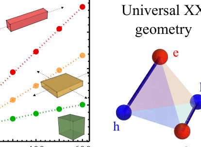
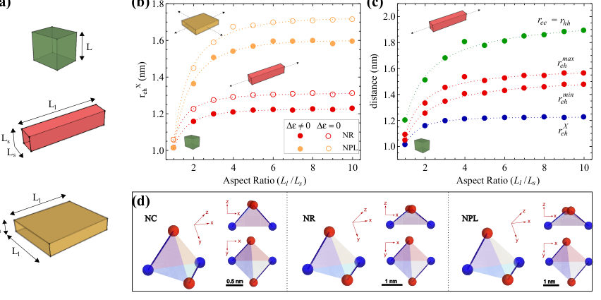
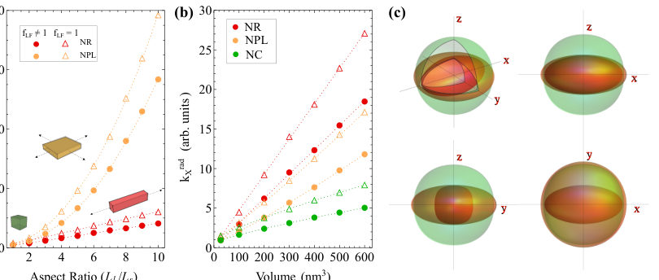
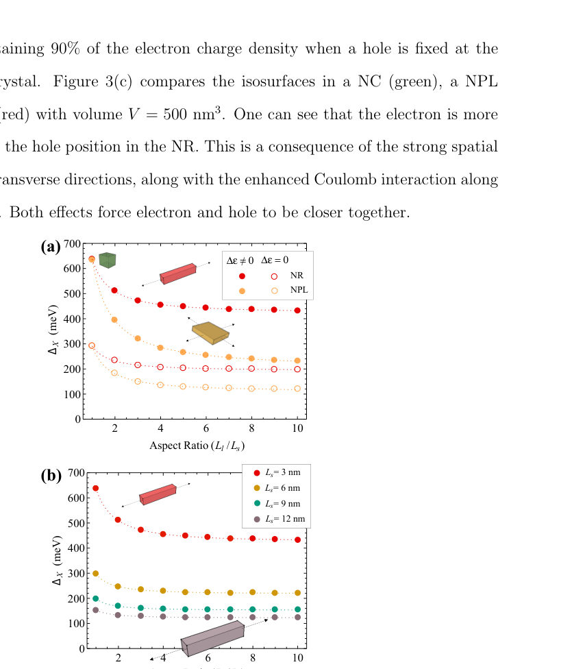
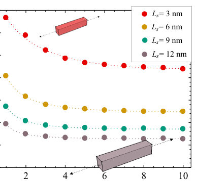
Summary. This theoretical study investigates how the dimensionality of CsPbBr3 nanocrystals affects their excitonic structure and light emission. Using a variational effective mass model, the authors find that confinement leads to superradiance, speeding up recombination rates from cubes to rods. The results highlight the crucial role of dielectric confinement and confirm that biexcitons adopt a stable, distorted tetrahedral geometry regardless of crystal shape.
Why it may be interesting. This work is highly relevant as it models complex many-body interactions (electron-hole correlation, polarons) in strongly confined semiconductor nanostructures, providing quantitative predictions for optical response based on geometric control.
Main problem. To systematically compare the excitonic structure (binding energy and radiative recombination rate) of CsPbBr3 nanocrystals with different dimensionalities: nanorods, nanoplatelets, and nanocubes.
Main result. The study shows that superradiance enhances radiative rates from cubes to platelets to rods, and the biexciton geometry is consistently a distorted tetrahedron across all dimensions. Dielectric confinement plays a major role in determining binding energies.
Method. A general variational effective mass model incorporating quantum confinement, dielectric confinement, electron-hole correlations, and polaronic effects (Haken model) was employed.
Model / system. The physical system is CsPbBr3 metal halide perovskite nanocrystals in three dimensions: 1D nanorods, 2D nanoplatelets, and 3D nanocubes. The theory uses a variational effective mass approach to calculate exciton (X) and biexciton (XX) ground state properties.
Key observables. Exciton binding energy ($\Delta X$), radiative recombination rate ($k_{rad}^X$), biexciton geometry, electron-hole distances ($r_{eh}$), and carrier-carrier distances ($r_{ee}, r_{hh}$).
Important parameters / regimes. Dimensionality (1D, 2D, 3D); confinement strength; dielectric mismatch ($\Delta\epsilon$); aspect ratios.
Assumptions / limitations. The standard Bohr radius formulas are insufficient due to complex confinement effects. The analysis for $\Delta XX$ assumes the same dielectric constants for X and XX, potentially underestimating the true value.
Figures summary. Figures compare schematics of NCs, NRs, and NPLs; show the effect of anisotropy on electron-hole distance; illustrate the increased e-h distances upon XX formation; and confirm the distorted tetrahedron geometry for XX charge distribution across all shapes.
Paper structure. The paper systematically compares excitonic properties by first establishing the theoretical framework (variational effective mass model) to calculate key observables like binding energies and radiative rates. It then analyzes how dimensionality dictates these properties, concluding with specific findings on superradiance enhancement and biexciton geometry.
We present a theoretical study comparing the excitonic ground state properties of CsPbBr$_3$ nanocrystals with different dimensionality: nanorods (1D), nanoplatelets (2D) and nanocubes (3D). All three systems are described on equal footing, by means of a general variational effective mass model, which captures the influence of quantum confinement, dielectric confinement, electron-hole correlations and polaronic effects (within a Haken model). The strongly confined directions squeeze the exciton (X) wavefunction and enhance Coulomb attractions along the weakly confined directions. This stimulates superradiance, thus making radiative recombination rates speed up from cubes to platelets and to rods, in line with recent experiments. The anisotropic local field factor is a secondary, yet non-negligible, mechanism further enhancing radiative rates. X binding energies are also determined primarily by the directions of strong confinenement, which is also consistent with experiments. Weakly confined directions become however influential for small aspect ratios. Dielectric confinement plays a major role in determining the binding energies, and less so in the interparticle-distances. For all dimensionalities, the biexciton (XX) geometry is that of a distorted tetrahedron, rather than squared or linear distributions that would result in Coulomb-governed 2D and 1D structures.
Authors: Katsunori Wakabayashi
Type: both · Category: other · PDF: https://arxiv.org/pdf/2607.15578v1
Analysis basis: full PDF text, analyzed in chunks
Topic relevance: non-equilibrium dynamics 1/5
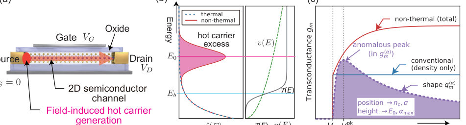
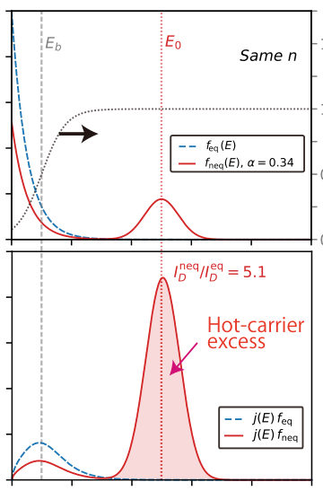
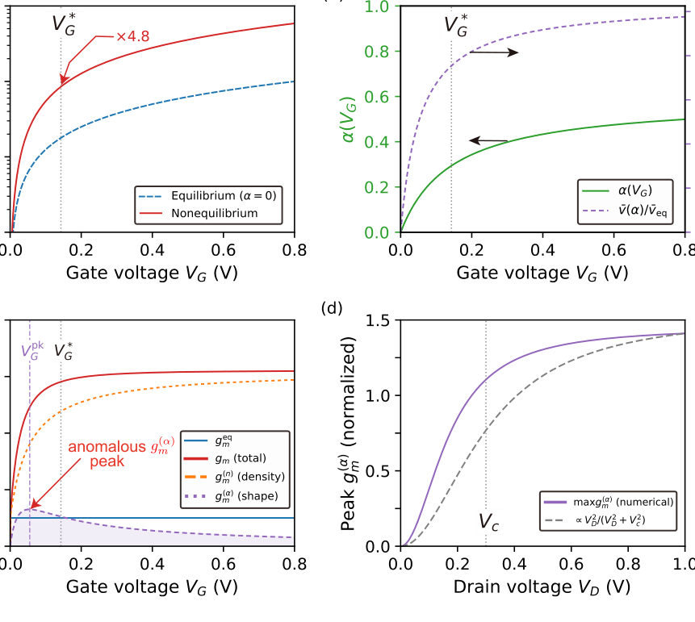
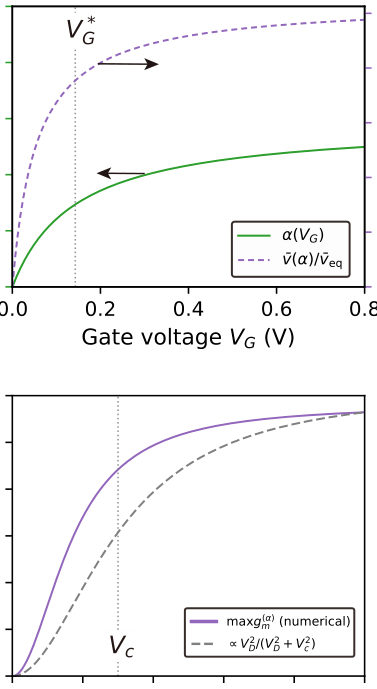
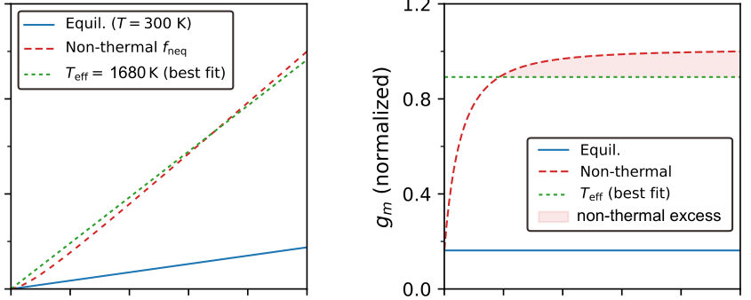
Summary. The authors demonstrate that the transconductance of 2D FETs acts as a spectroscopic tool sensitive to the detailed shape of the hot-carrier energy distribution. By decomposing $g_m$, they isolate an anomalous peak whose existence and parameters allow for all-electrical determination of key hot-carrier properties like energy ($E_0$) and spectral width ($\sigma$). This establishes a powerful, non-optical diagnostic technique for understanding non-equilibrium carrier dynamics.
Why it may be interesting. This work provides a novel, purely electrical method for characterizing non-equilibrium carrier energy distributions in nanoscale devices, which is highly relevant for understanding transport limitations in next-generation quantum electronic components.
Main problem. To develop a spectroscopic probe using transconductance ($g_m$) that measures the shape of the carrier energy distribution $f(E)$ in 2D FETs, rather than just its integrated weight (carrier density).
Main result. The anomalous peak observed in the shape-driven residual term, $g_m(\alpha)$, confirms that hot carriers introduce spectral features inaccessible to simple density or effective temperature models.
Method. The transconductance is decomposed into a conventional density-modulation term and a distribution-shape-driven residual term. This technique is applied using both steady-state DC/lock-in measurements and time-resolved pump-probe spectroscopy.
Model / system. The study uses two-dimensional (2D) Field-Effect Transistors (FETs), particularly those based on TMDs, where the carrier distribution $f(E)$ is modeled as a combination of thermal and non-equilibrium Gaussian hot-carrier components. The transport physics is analyzed via spectral integrals.
Key observables. The anomalous peak in transconductance ($g_m(\alpha)$), drain current ($I_D$), and transient decay times ($ au_E, au_n$).
Important parameters / regimes. Hot-carrier energy ($E_0$), spectral width ($\sigma$), generation threshold ($n_c$), and carrier relaxation time ($ au$).
Assumptions / limitations. The analysis relies on a gate-independent spectral-kernel approximation, and the hot-carrier distribution is often modeled phenomenologically (e.g., Gaussian bump).
Figures summary. Figures illustrate the concept by contrasting featureless equilibrium responses with anomalous peaks in $g_m( ext{VG})$ due to hot carriers; time-resolved measurements show characteristic exponential decays allowing separation of energy and density relaxation times.
Paper structure. The paper progresses from establishing the theoretical decomposition of $g_m$ into shape and density components, demonstrating the anomalous peak signature in steady-state measurements, and finally extending the analysis to time-domain pump-probe experiments to extract dynamic parameters like $ au_E$.
The transconductance $g_m = dI_D/dV_G$ of a field-effect transistor (FET) is conventionally read as a proxy for carrier density. We show that it is instead a spectroscopic probe of the carrier distribution: because $g_m$ weights the spectral current $j(E)$ by the gate-voltage derivative $\partial f(E)/\partial V_G$ and integrates over energy, it is sensitive to the \emph{shape} of $f(E)$, not merely its integrated weight $n$. We develop an energy-resolved transport framework for two-dimensional (2D) FETs and, within a gate-independent spectral-kernel approximation, derive the decomposition $g_m = g_m^{(n)} + g_m^{(α)}$ into the conventional density-modulation term $g_m^{(n)}$ and a distribution-shape-driven term $g_m^{(α)}$. The latter, obtained as the residual after subtracting the smooth density-modulation background from the measured $g_m$, exhibits a characteristic anomalous peak at a gate voltage $V_G^{\rm pk}$. This peak has no counterpart in equilibrium transport and \emph{cannot be explained by carrier density modulation alone}. With the spectral kernel calibrated, the peak position and height -- extracted from standard DC/lock-in $g_m$ sweeps -- constrain the hot-carrier energy $E_0$, spectral width $σ$, and generation threshold $n_c$, realizing a steady-state, all-electrical spectroscopy of the carrier distribution. An optional time-resolved extension further recovers the carrier relaxation time $τ$ from the transient response following a pump excitation, establishing the 2D FET as a distribution-function spectrometer that requires no optical readout.